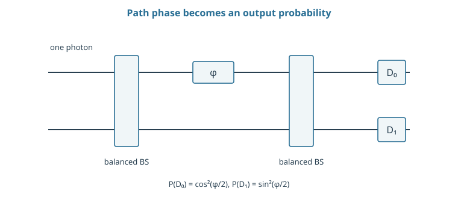
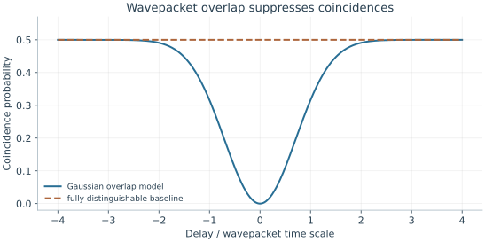

Starting point: Chapters 1–12; physical concepts and approximations are introduced as needed.
Anchor example: A dual-rail qubit passing through a balanced beam splitter.
This lesson includes explanations, worked examples, and problems with solutions. Advanced results whose proofs are outside the chapter are identified explicitly.
13.1 Optical Qubits
A photon can take two paths coherently. A beam splitter mixes those paths, but making one photon control another requires an additional mechanism.
13.1.1 Encoding and sources
In dual-rail encoding a single photon occupies one of two modes: \(\ket{0_L}=\ket{1,0}\), \(\ket{1_L}=\ket{0,1}\). A general qubit is \((a a^\dagger_0+b a^\dagger_1)\ket{\mathrm{vac}}\), with \(|a|^2+|b|^2=1\). A rail label is the logical alternative; neither logical state is optical vacuum.
A source must prepare one photon in the intended temporal, spectral, and spatial mode. Vacuum and extra photons lie outside this two-dimensional encoding. If the source produces vacuum with probability v and readout simply discards no-click events, the retained state can look good while unconditional success is at most \(1-v\). Record that preparation probability along with conditional qubit quality.
13.1.2 Interference and phase control
Choose a real balanced beam-splitter convention with mode matrix \(B=2^{-1/2}\begin{pmatrix}1&1\\1&-1\end{pmatrix}\). Its columns are orthonormal, so it preserves the total one-photon probability. An input in the first rail leaves with equal amplitudes in the two outputs.
A phase plate in the second path multiplies that amplitude by \(e^{i\phi}\). Passing through a second identical beam splitter gives output amplitudes \((1+e^{i\phi})/2\) and \((1-e^{i\phi})/2\), hence probabilities \(\cos^2(\phi/2)\) and \(\sin^2(\phi/2)\). This is the same interference mechanism as in the computing course, now implemented by physical paths. Loss, path drift, and imperfect mode matching reduce the contrast; they must be separated from an intended phase shift.

The two horizontal lines are optical modes, not two photons. A single photon occupies a coherent superposition of paths. The probability formulas use the real beam-splitter convention stated in the text.
Problem 13.1. What happens to a dual-rail qubit if its photon is lost?
Worked solution
The state leaves the one-photon subspace and becomes vacuum in the two rails. This is not the logical zero, which still contains one photon.
13.2 Photonic Gates
13.2.1 Two-photon interference
Creation operators describe adding photons to a mode. For independent bosonic output modes, \(c^\dagger d^\dagger=d^\dagger c^\dagger\). With one identical photon in each input, substitute the beam-splitter transformations:
The terms with one photon in each output cancel. The factors \(\sqrt2\) follow from the normalization of a two-photon number state. If another degree of freedom labels which photon is which, the alternatives need not interfere in this way. For pure wavepackets with overlap μ, the ideal balanced coincidence probability is \((1-|\mu|^2)/2\). This makes indistinguishability a measurable control requirement.
13.2.2 Measurement-induced operations
Passive linear optics transforms mode amplitudes, but does not by itself supply a deterministic entangling gate on isolated dual-rail qubits. Detection of ancillary modes can change that: keep only an accepted outcome m, giving conditional data operator \(K_m=\bra mU\ket{\mathrm{ancilla}}\).
The accepted output is \(K_m\ket\psi/\sqrt{p_m}\), where \(p_m=\|K_m\ket\psi\|^2\). To implement the same heralded unitary U₀ on every logical input with input-independent success s, one needs \(K_m=\sqrt s\,U_0\) on the code space. Otherwise postselection can distort the amplitudes or favor certain inputs. The KLM construction proves a scalable route with additional resources under stated assumptions; that theorem is not derived by this small conditional-operator calculation.

For the assumed squared overlap |μ|² = exp[−(delay/τ)²], the ideal probability is (1−|μ|²)/2. This is an analytical overlap model, not a fitted experimental dip.
Problem 13.2. What is the ideal coincidence probability for one identical photon in each balanced input?
Worked solution
Zero: expanding the creation operators cancels the term with one photon in each output. For fully distinguishable photons the probability is one half.
13.3 Detection and Architecture
13.3.1 Loss and heralding
Model an inefficient photon detector as ideal detection after a loss channel of transmission η. For n independent photons, the probability of detecting none is \((1-\eta)^n\); detecting at least one has probability \(1-(1-\eta)^n\). A threshold detector reports only whether there was a click, while number resolution distinguishes counts.
For a single-photon qubit, loss moves the state to vacuum and can be flagged only by an appropriate encoding and measurement context. A destructive final measurement cannot make the surviving qubit available for another gate. Dark counts can also turn absence into an apparent success. Report source probability, transmission, detection efficiency, false clicks, and conditioning separately; they affect rate and conditional fidelity in different ways.
13.3.2 Resource states and multiplexing
If an independent source succeeds with probability s, M parallel sources all fail with probability \((1-s)^M\). Availability of at least one photon is therefore \(1-(1-s)^M\). At \(s=0.1\), M=10 gives 0.6513 before routing losses.
Suppose selecting that photon requires \(\lceil\log_2M\rceil\) switching stages, each of transmission ηₛ. Delivered availability in a simplified balanced tree is \([1-(1-s)^M]\eta_s^{\lceil\log_2M\rceil}\). More sources can improve production while deeper switching loses photons. Resource-state construction adds repeated heralded fusions and storage, whose failed attempts must be counted. The relevant architecture includes sources, interferometers, switches, delay lines, and detectors rather than just the logical circuit.
Problem 13.3. If independent sources succeed with probability 0.1, what is the chance that at least one of ten succeeds?
Worked solution
It is 1 − 0.9¹⁰ ≈ 0.6513, before switching loss. Multiplexing improves availability but does not eliminate the cost of routing the successful photon.
A mode can hold more than a single photon. Using that larger space for encoding leads to bosonic error-protection strategies.
Worked model check. Ten sources each succeed with probability 0.1. Four required switching stages each transmit with probability 0.95. Estimate delivered availability.
Worked solution
\([1-0.9^{10}]0.95^4\simeq0.5305\). This model counts delivery of at least one selected photon; it does not certify its mode or logical quality.
These exercises draw on the whole chapter. Attempt each question before opening a hint, explain your reasoning, then compare it with the worked solution.
In a Mach–Zehnder interferometer built from the balanced beam splitter of the text, the phase plate is set to \(\phi=\pi/3\). Find the output probabilities. Which phase sends the photon to the second output with certainty?
Hint 1
Probabilities \(\cos^2(\phi/2)\) and \(\sin^2(\phi/2)\).
Hint 2
\(\cos^2(\pi/6)=3/4\).
Worked solution
\(\cos^2(\pi/6)=0.75\) and \(\sin^2(\pi/6)=0.25\). The second output is certain at \(\phi=\pi\). A dual-rail single-qubit gate is just a choice of beam splitters and phases; drift in \(\phi\) is a rotation error, while loss lowers both outputs together.
Two photons with wavepacket overlap \(|\mu|^2=0.9\) enter the two inputs of a balanced beam splitter. Find the coincidence probability. What value would perfectly distinguishable photons give?
Hint 1
Coincidence probability \((1-|\mu|^2)/2\).
Hint 2
Distinguishable means \(\mu=0\).
Worked solution
\((1-0.9)/2=0.05\). Perfectly distinguishable photons give \(\frac12\), like classical particles choosing outputs independently. The drop from \(0.5\) to \(0.05\) measures indistinguishability, a resource that every interference-based photonic gate needs.
A threshold detector has efficiency \(\eta=0.8\). Find the click probability for one photon and for three photons arriving together. Can the detector tell these cases apart?
Hint 1
No click requires every photon to be missed.
Hint 2
\(1-(1-\eta)^n\).
Worked solution
One photon: \(0.8\). Three photons: \(1-0.2^3=0.992\). A threshold detector reports only “click” or “no click,” so a click does not reveal whether one or three photons arrived. That matters when heralding single photons, because multiphoton events then pass as successes; number-resolving detectors are needed to reject them.
Multiplexed sources each succeed with \(s=0.1\), and selecting one requires \(\lceil\log_2M\rceil\) switch stages of transmission \(0.97\). (a) Evaluate the delivered availability for \(M=8,16,32,64,128\). (b) Which \(M\) is best? (c) What limits further improvement?
(a) \(M=8\): \(0.520\); \(16\): \(0.721\); \(32\): \(0.829\); \(64\): \(0.832\); \(128\): \(0.808\). (b) The optimum is near \(M=32\) to \(64\). (c) Once almost every round produces a photon, extra sources add nothing, while each doubling adds a switch stage that loses \(3\%\). The ceiling is \(0.97^{\lceil\log_2M\rceil}\), so switch transmission, not source probability, limits delivered availability; better switches raise the optimum and the ceiling together.
For wavepackets with \(|\mu|^2=e^{-(\text{delay}/\tau)^2}\), (a) find the coincidence probability at a delay of \(\tau/2\); (b) a measured coincidence of \(0.20\) implies what delay; (c) explain how scanning the delay calibrates timing between sources.
Hint 1
\(e^{-0.25}\approx0.779\).
Hint 2
Solve \((1-|\mu|^2)/2=0.20\).
Worked solution
(a) \(|\mu|^2\approx0.779\), coincidence \(\approx0.11\). (b) \(|\mu|^2=0.6\), so \((\text{delay}/\tau)^2=-\ln0.6\approx0.51\) and the delay is about \(0.71\tau\). (c) Scanning the delay traces the dip; its minimum locates zero relative delay and its depth measures the best achievable indistinguishability. A dip that does not reach the ideal depth reveals spectral or polarization mismatch rather than timing.
A heralded operation has conditional operator \(K=\mathrm{diag}(\frac12,\frac{1}{\sqrt2})\) on the logical basis. (a) For input \(\ket+\), find the success probability and the accepted output. (b) Compute its fidelity with \(\ket+\). (c) What condition on \(K\) makes the heralded operation faithful for every input?
(a) \(K\ket+=\frac{1}{\sqrt2}(\frac12\ket0+\frac{1}{\sqrt2}\ket1)\), so \(p=\frac12(\frac14+\frac12)=0.375\), and the accepted output is \((\ket0+\sqrt2\ket1)/\sqrt3\). (b) Fidelity \(|1+\sqrt2|^2/6\approx0.971\). (c) \(K\) must equal \(\sqrt s\,U_0\) on the code space: proportional to a unitary, so every input succeeds with the same probability and is transformed without distortion. Unequal diagonal entries mean the heralding itself acts as a partial measurement.
A source emits vacuum with probability \(v=0.3\) and otherwise a perfect single photon. (a) A protocol needs four photons simultaneously from four independent sources. Find the unconditional success probability. (b) Postselection on four clicks reports a conditional fidelity of \(0.99\). Why is this incomplete? (c) How does multiplexing with \(M=4\) sources per required photon change the success?
Hint 1
Four independent successes: \((1-v)^4\).
Hint 2
With \(M\) sources, a slot fails only if all \(M\) emit vacuum.
Worked solution
(a) \(0.7^4\approx0.24\). (b) The conditional fidelity describes accepted runs only; three-quarters of runs fail, and the rate, along with any bias the postselection introduces, must be reported. (c) Each slot then fails with \(0.3^4\approx0.008\), so all four slots succeed with \(0.992^4\approx0.97\) before switch losses. Multiplexing converts probabilistic sources into nearly deterministic ones at the cost of switches and more hardware.
A student treats every herald click as a single photon. A source produces one photon with probability \(0.1\), two photons with probability \(0.005\), and otherwise vacuum, and the herald detector has \(\eta=0.9\) with threshold response. (a) Find the probability of a click and the fraction of clicks that came from two-photon events. (b) Why does this matter for photonic gates?
(a) Click probability \(=0.1\times0.9+0.005\times0.99\approx0.090+0.005=0.095\). Two-photon events make up about \(0.005/0.095\approx5\%\) of clicks. (b) A two-photon input lies outside the dual-rail code space: it ruins interference (it contributes coincidences in a two-photon interference test) and can produce false heralds in measurement-induced gates. Multiphoton contamination must be suppressed at the source or detected with number-resolving heralds.
Replace the balanced beam splitter by a real unbalanced one, \(B=\begin{pmatrix}t&r\\r&-t\end{pmatrix}\) with \(t^2+r^2=1\). For one identical photon in each input, (a) show that the coincidence amplitude is \(t^2-r^2\) up to sign; (b) evaluate the coincidence probability for \(t^2=0.6\); (c) explain why balanced splitting is needed for complete cancellation.
(a) \(a^\dagger b^\dagger\mapsto(tc^\dagger+rd^\dagger)(rc^\dagger-td^\dagger)\). The \(c^\dagger d^\dagger\) coefficient is \(-t^2+r^2\), so the coincidence probability is \((t^2-r^2)^2\). (b) \((0.6-0.4)^2=0.04\). (c) The two paths to a coincidence (both transmitted, both reflected) cancel only if their amplitudes have equal magnitude, \(t^2=r^2=\frac12\). Imbalance leaves a floor in the dip even for perfectly identical photons, so interference visibility mixes beam-splitter imbalance with photon distinguishability.
A photonic architecture fuses small resource states with probabilistic operations that succeed with probability \(\frac12\) and herald failure. (a) What is the probability that \(10\) independent fusions all succeed on the first attempt? (b) If each failed fusion can be retried with fresh resources, what is the expected number of attempts per successful fusion, and per \(10\) fusions? (c) How does loss change the picture?
Hint 1
\(2^{-10}\approx10^{-3}\).
Hint 2
Geometric distribution: mean \(1/p\) attempts.
Worked solution
(a) \(2^{-10}\approx0.001\). (b) Each fusion needs \(2\) attempts on average, so \(10\) fusions need about \(20\), and the extra resource states and storage must be counted. (c) Loss makes some failures unheralded or erases photons that the next fusion needed, so the cost grows faster, and architectures use larger, more redundant resource states so that the computation survives a fraction of failed and lost fusions.